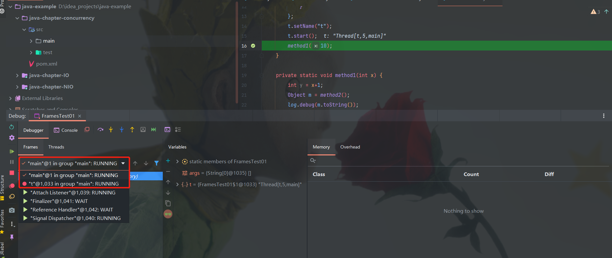
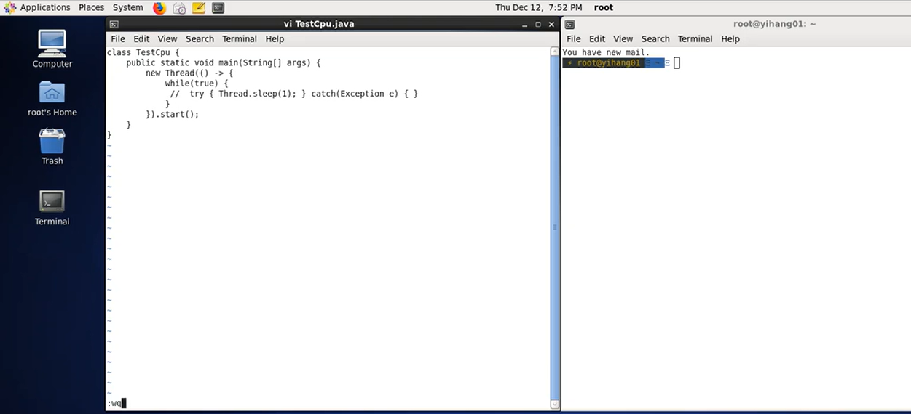
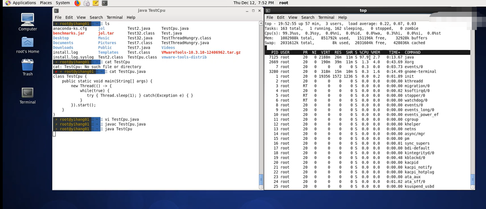
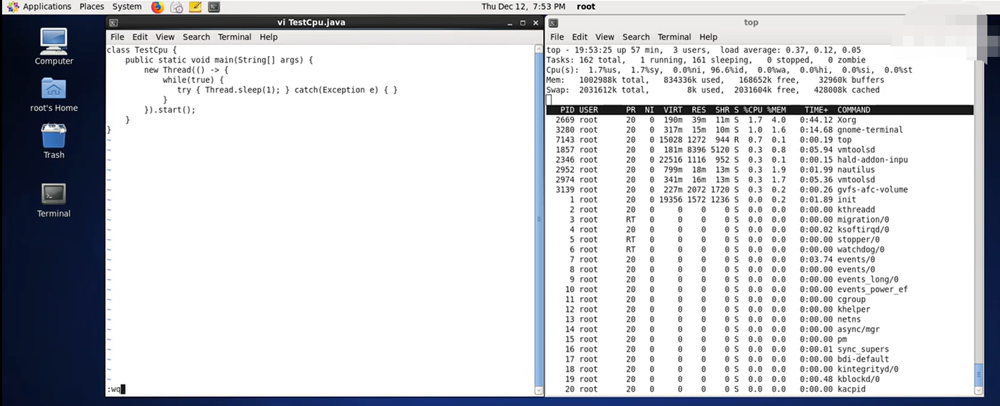
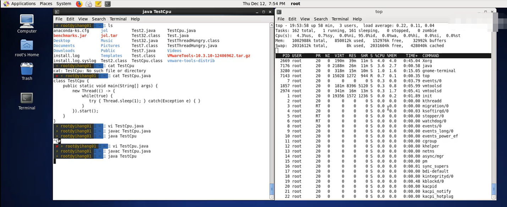

Java并发编程（一） 基础篇
1. 进程和线程
1.1 什么是进程（Process）
进程是操作系统进行资源分配的最小单位。因为现在的操作系统都是多任务的操作系统，多任务操作系统是允许多个进程在一个cpu上运行的。对于每一个进程而言，都有自己独立的代码和数据空间，这个称之为进程的上下文，cpu从一个进程切换到另外一个进程所做的动作称为进程的上下文切换。操作系统通过频繁的切换进程来实现cpu资源的有效分配，并看起来像在同时运行一样。 进程的上下文切换和进程间的通信需要有较多的开销，为了执行更多的任务，提升系统的效率，引入了线程。一个进程可以有一个或者多个线程所组成。
1.2 什么是线程（Thread）
线程是cpu调度的最小单位，是进程中的一部分，它由进程所创建产生，一个进程下的线程共享该进程的资源和程序代码。受操作系统的影响，每个操作系统能同时运行的进程数目是有限的，每个进程能够开启的线程数目也是有上限的，在同一个cpu核心上，多个线程以抢占或者主动让出时间片的形式轮流执行。基于同一段代码可以创建多个线程，这些线程共享进程的数据空间，但每个线程有独立的运行栈和程序计数器。
2. 并发与并行

2.1 什么是并发（Concurrent）
单核CPU下，线程实际还是串行执行的。操作系统中有一个组件叫做任务调度器，将CPU的时间片（windows下时间片最小约为 15 毫秒）分给不同的程序使用，只是由于CPU在线程间（时间片很短）的切换非常快，人类感觉是同时运行的。总结为一句话就是：微观串行，宏观并行，一般会将这种 线程轮流使用 CPU 的做法称为并发(concurrent)。
2.2 什么是并行（Parallel）
多核CPU下，每个核（core）都可以调度运行线程，这时候线程可以是并行的。
⾕歌著名⼯程师罗布·派克（Rob Pike）说过，“并发就是同时应对 （Dealing With）多件事情的能⼒，并⾏是同时执⾏（Doing）多件事情的 能⼒”。
3. 为什么使用多线程
- 更好地利用单个 CPU
最常见的原因之一是能够更好地利用计算机中的资源。例如，如果一个线程正在等待对通过网络发送的请求的响应，则另一个线程在此期间可以使用 CPU 执行其他操作。此外，如果计算机具有多个 CPU，或者 CPU 具有多个执行内核，则多线程处理还可以帮助应用程序利用这些额外的 CPU 内核。 - 更好地利用多个 CPU 或 CPU 内核
如果计算机包含多个 CPU 或 CPU 包含多个执行内核，则需要使用多个线程，以便应用程序能够利用所有 CPU 或 CPU 内核。单个线程最多只能使用单个 CPU，正如我上面提到的，有时甚至不能完全使用单个 CPU。 - 在响应能力方面提供更好的用户体验
使用多线程的另一个原因是提供更好的用户体验。例如，如果您单击 GUI 中的按钮，这会导致通过网络发送请求，则哪个线程执行此请求很重要。如果使用也更新 GUI 的同一线程，则在 GUI 线程等待请求响应时，用户可能会遇到 GUI”挂起”。相反，这样的请求可以由后台线程执行，因此 GUI 线程在此期间可以自由地响应其他用户请求。 - 在公平性方面提供更好的用户体验
第四个原因是在用户之间更公平地共享计算机的资源。例如，假设一个服务器接收来自客户端的请求，并且只有一个线程来执行这些请求。如果客户端发送的请求需要很长时间才能处理，则所有其他客户端的请求都必须等到该请求完成。通过让每个客户端的请求由其自己的线程执行，那么没有一个任务可以完全垄断CPU。4.Java线程
4.1 创建和运行线程
4.1.1 直接使用Thread
1
2
3
4
5
6
7
8
9
10
11
12
13
14
15
16
17
18
19
20
21
22
23package com.java.demo.thread;
import lombok.extern.slf4j.Slf4j;
4j(topic = "c.Test01")
public class Test01 {
public static void main(String[] args) {
// 创建线程
Thread t = new Thread(){
public void run() {
// 任务代码
log.debug("running");
}
};
// 线程命名
t.setName("t1");
// 启动线程
t.start();
log.debug("running");
}
}
4.1.2 使用Runnable配合Thread
把
线程和任务（要执行的代码）分开
1 | import lombok.extern.slf4j.Slf4j; |
Thread与Runnable的关系
Thread类中有个Runnable类型的属性，不论是直接使用Thread创建并运行线程还是通过Runnable配合Thread的方式创建运行线程，都是调用Thread的run()方法，其run()方法如下:
1 | /** |
只不过该线程是使用单独的 Runnable 运行对象构造的，则调用该 Runnable 对象的 run 方法；否则，此方法不执行任何操作并返回。Thread 的子类应该覆盖这个方法。
总结
- 使用
Runnable可以把线程和任务分开 - 使用 Runnable 更容易与线程池等高级 API 配合
- 使用 Runnable 让任务类脱离了 Thread 继承体系，更灵活（一般建议组合关系优于继承关系）
4.1.3 FutureTask配合Thread
1
2
3
4
5
6
7
8
9
10
11
12
13
14
15
16
17
18
19
20
21
22import lombok.extern.slf4j.Slf4j;
import org.junit.Test;
import java.util.concurrent.ExecutionException;
import java.util.concurrent.FutureTask;
4j(topic = "c.Test03")
public class Test03 {
public void test() throws ExecutionException, InterruptedException {
// 创建任务对象
FutureTask<String> futureTask = new FutureTask<>(()->{
log.debug("running");
return "Hello!";
});
// 启动线程
new Thread(futureTask,"t").start();
// 主线程阻塞，同步等待futureTask执行结果
String res = futureTask.get();
log.debug("结果是：{}",res);
}
}
4.2 查看进程线程的方法
4.2.1 Windows
任务管理器
- 可以查看进程和线程数，也可以用来杀死进程
cmd窗口 tasklist查看所有进程tasklist | findstr <PID/应用名>查找进程taskkill杀死进程
4.2.2 Linux
ps -fe查看所有进程ps -fT -p <PID>查看某个进程（PID）的所有线程kill杀死进程top按大写 H 切换是否显示线程top -H -p <PID>查看某个进程（PID）的所有线程
4.2.3 Java
命令式
jps命令查看所有 Java 进程jstack <PID>查看某个 Java 进程（PID）的所有线程状态
图形化工具jconsole
jconsole 远程监控配置
- 需要以如下方式运行你的 java 类
1 | java |
- 修改 /etc/hosts 文件将 127.0.0.1 映射至主机名
- 如果要认证访问，还需要做如下步骤
- 复制 jmxremote.password 文件
- 修改 jmxremote.password 和 jmxremote.access 文件的权限为 600 即文件所有者可读写
- 连接时填入 controlRole（用户名），R&D（密码）
5. 线程运行原理
5.1 栈与栈帧
Java Virtual Machine Stacks（Java 虚拟机栈）
我们都知道 JVM 中由堆、栈、方法区所组成，其中栈内存是给谁用的呢？其实就是线程，每个线程启动后，虚拟机就会为其分配一块栈内存。 - 每个栈由多个栈帧（Frame）组成，对应着每次方法调用时所占用的内存
- 每个线程只能有一个活动栈帧，对应着当前正在执行的那个方法
5.1.1 栈帧Debug
测试代码1
2
3
4
5
6
7
8
9
10
11
12
13
14
15
16
17
18
19
20
21
22
23
24package com.java.demo.theory;
import lombok.extern.slf4j.Slf4j;
/**
* Debug测试栈帧
*/
4j(topic = "c.FrameTest")
public class FramesTest {
public static void main(String[] args) {
method1(10);
}
private static void method1(int x) {
int y = x+1;
Object m = method2();
log.debug(m.toString());
}
private static Object method2() {
Object n = new Object();
return n;
}
}
在IntelliJ IDEA中Debug启动，可以查看栈帧运行数据。
多线程Debug
测试代码：
1 | package com.java.demo.theory; |
IntelliJ IDEA中右键断点，设置断点模式为Thread模式，才可以Debug跟踪线程。
还可以在Debug控制台切换线程，查看不同线程的栈帧信息

5.1.2 图解栈帧

5.2 线程上下文切换（Thread Context Switch）
因为以下一些原因导致 cpu 不再执行当前的线程，转而执行另一个线程的代码
- 线程的 cpu 时间片用完
- 垃圾回收
- 有更高优先级的线程需要运行
- 线程自己调用了 sleep、yield、wait、join、park、synchronized、lock 等方法
当 Context Switch 发生时，需要由操作系统保存当前线程的状态，并恢复另一个线程的状态，Java 中对应的概念就是程序计数器（Program Counter Register），它的作用是记住下一条 jvm 指令的执行地址，是线程私有的
- 状态包括程序计数器、虚拟机栈中每个栈帧的信息，如局部变量、操作数栈、返回地址等
- Context Switch 频繁发生会影响性能
测试代码：
1 | package com.java.demo.theory; |
5.2.1 图解上下文切换


6. 线程常用方法
| 序号 | 方法名 | 静态方法 | 功能说明 | 注意 |
|---|---|---|---|---|
| 1 | start() | 启动一个新线程，在新的线程 运行run方法中的代码 | start 方法只是让线程进入就绪，里面代码不一定立刻运行（CPU 的时间片还没分给它）。 每个线程对象的start方法只能调用一次，如果调用了多次会出现IllegalThreadStateException | |
| 2 | run() | 新线程启动后会调用的方法 | 如果在构造Thread对象时传递了Runnable参数，则新线程启动后会调用Runnable中的run方法， 否则默认不执行任何操作。但可以创建Thread的子类对象，来覆盖默认行为 | |
| 3 | join() | 等待线程运行结束 | ||
| 4 | join(long n) | 等待线程运行结束，最多等待n毫秒 | ||
| 5 | getId() | 获取线程长整型的id | id唯一 | |
| 6 | getName() | 获取线程名 | ||
| 7 | setName(String) | 修改线程名 | ||
| 8 | getPriority() | 获取线程优先级 | ||
| 9 | setPriority(int) | 修改线程优先级 | java中规定线程优先级是1—10的整数，较大的优先级能提高该线程被CPU调度的机率 | |
| 10 | getState() | 获取线程状态 | Java中线程状态时6个enum表示，分别为：NEW, RUNNABLE, BLOCKED, WAITING, TIMED_WAITTING,TERMINATED | |
| 11 | isInterrupted() | 判断是否被打断 | 不会清除 打断标记 | |
| 12 | isAlive() | 线程是否存活（还没有运行完毕） | ||
| 13 | interrupt() | 打断线程 | 如果被打断线程正在 sleep，wait，join 会导致被打断的线程抛出InterruptedException, 并清除打断标记； 如果打断的正在运行的线程，则会设置打断标记； park的线程被打断，也会设置打断标记 | |
| 14 | interrupted() | static | 判断当前线程是否被打断 | 会清除 打断标记 |
| 15 | currentThread() | static | 获取当前正在执行的线程 | |
| 16 | sleep(long n) | static | 让当前执行的线程休眠n毫秒，休眠时让出CPU 的时间片给其他线程 | |
| 17 | yield() | static | 提示线程调度器让出当前线程对CPU的使用 | 主要是为了测试和调试 |
6.1 start与run
调用run
1 | import lombok.extern.slf4j.Slf4j; |
运行结果
1 | 22:56:52 [main] c.ThreadMethodTest - t is NEW |
调用start
1 | import lombok.extern.slf4j.Slf4j; |
运行结果
1 | 22:57:47 [main] c.ThreadMethodTest - t is NEW |
总结
- 直接调用 run 是在主线程中执行了 run，没有启动新的线程
- 使用 start 是启动新的线程，通过新的线程间接执行 run 中的代码
6.2 sleep与yield
调用sleep
- 调用
sleep会让当前线程从Running进入Timed Waiting状态（阻塞）
代码示例：1
2
3
4
5
6
7
8
9
10
11
12
13
14
15
16
17
18
19
20
21
22import lombok.extern.slf4j.Slf4j;
4j(topic = "c.ThreadMethodTest01")
public class ThreadMethodTest01 {
public static void main(String[] args){
Thread t = new Thread(() -> {
log.debug("{} state is {}", Thread.currentThread().getName(), Thread.currentThread().getState());
try {
Thread.sleep(2000);
} catch (InterruptedException e) {
e.printStackTrace();
}
}, "t");
t.start();
try {
Thread.sleep(1000);
} catch (InterruptedException e) {
e.printStackTrace();
}
log.debug("{} state is {}",t.getName(),t.getState());
}
}
运行结果：
1 | 23:24:33 [t] c.ThreadMethodTest01 - t state is RUNNABLE |
- 其它线程可以使用
interrupt方法打断正在睡眠的线程，这时sleep方法会抛出InterruptedException
代码示例：1
2
3
4
5
6
7
8
9
10
11
12
13
14
15
16
17
18
19
20
21
22
23
24
25
26
27
28
29
30
31package com.java.demo.threadmethod;
import lombok.extern.slf4j.Slf4j;
4j(topic = "c.ThreadMethodTest02")
public class ThreadMethodTest02 {
public static void main(String[] args) {
Thread t = new Thread("t"){
public void run() {
log.debug("Sleep...");
log.debug("{} state is{}",Thread.currentThread().getName(),Thread.currentThread().getState());
try {
Thread.sleep(2000);
} catch (InterruptedException e) {
log.debug("Interrupted...");
log.debug("{} state is{}",Thread.currentThread().getName(),Thread.currentThread().getState());
e.printStackTrace();
}
}
};
t.start();
try {
Thread.sleep(1000);
} catch (InterruptedException e) {
e.printStackTrace();
}
t.interrupt();
log.debug("{} state is {}",t.getName(),t.getState());
}
}
运行结果：
1 | 09:34:27 [t] c.ThreadMethodTest02 - Sleep... |
- 睡眠结束后的线程未必会立刻得到执行
- 建议用 TimeUnit 的 sleep 代替 Thread 的 sleep 来获得更好的可读性
代码示例:
1 | import lombok.extern.slf4j.Slf4j; |
运行结果：
1 | 09:42:42 [main] c.ThreadMethodTest03 - sleep... |
调用yield
- 调用
yield会让当前线程从Running进入Runnable就绪状态，然后调度执行其它线程 - 具体的实现依赖于操作系统的任务调度器
总结
- 表面上看
sleep和yield都是让当前线程不要运行，把机会让给其他线程。 - 调用
sleep会让当前线程从Running进入Timed Waiting状态（阻塞）;调用yield会让当前线程从Running进入Runnable就绪状态，然后调度执行其它线程;CPU不会为阻塞状态的线程分配时间片。 - sleep可以设置休眠时间，而且调用之后线程肯定不会运行；yield调用之后不一定让出机会给其他线程，依赖CPU的任务调度器，换句话说，就是礼让其他线程。
6.3. 线程优先级
- 线程优先级会提示（hint）调度器优先调度该线程，但它仅仅是一个提示，调度器可以忽略它
- 如果 cpu 比较忙，那么优先级高的线程会获得更多的时间片，但 cpu 闲时，优先级几乎没作用
使用yield1
2
3
4
5
6
7
8
9
10
11
12
13
14
15
16
17
18
19
20
21
22
23
24
25
26
27
28
29
30
31
32
33
34
35
36
37package com.java.demo.threadmethod;
import lombok.extern.slf4j.Slf4j;
4j(topic="c.ThreadMethodTest04")
public class ThreadMethodTest04 {
public static void main(String[] args) {
Runnable task1 = new Runnable() {
public void run() {
int count = 0;
for (; ; ) {
System.out.println("------> 1 is " + count++);
}
}
};
Runnable task2 = new Runnable() {
public void run() {
int count = 0;
for (; ; ) {
Thread.yield();
System.out.println(" ------>2 is " + count++);
}
}
};
Thread t1 = new Thread(task1, "t1");
Thread t2 = new Thread(task2, "t2");
// 设置线程优先级
//t1.setPriority(Thread.MIN_PRIORITY);
//t2.setPriority(Thread.MAX_PRIORITY);
t1.start();
t2.start();
}
}
执行结果：
1 | ------>2 is 56583 |
使用线程优先级
1 | package com.java.demo.threadmethod; |
执行结果
1 | ------>2 is 245173 |
6.4 应用案例 之 sleep限制对CPU的使用
在没有利用 cpu 来计算时，不要让 while(true) 空转浪费 cpu，这时可以使用 yield 或 sleep 来让出 cpu 的使用权给其他程序
代码实现：
1 | while(true) { |
- 可以用 wait 或 条件变量达到类似的效果
- 不同的是，后两种都需要加锁，并且需要相应的唤醒操作，一般适用于要进行同步的场景
sleep适用于无需锁同步的场景
结果验证：




6.5 join方法详解
6.5.1 为什么需要join
1 | package com.java.demo.threadmethod; |
执行结果：
1 | 13:55:01 [main] c. ThreadMethodTest05 - main is start... |
分析原因：
因为主线程和线程 t1 是并行执行的，t1 线程需要 1 秒之后才能算出 r=10
而主线程一开始就要打印 r 的结果，所以只能打印出 r=0
解决方法：
- 用 sleep 行不行？为什么？
不可行！因为主线程不知道t1多久执行完，不可预知。- 用 join，加在 t1.start() 之后即可
1 | t1.join(); |
执行结果：
1 | 13:56:53 [main] c. ThreadMethodTest05 - main is start... |
6.5.2 有时效的join
- 等够时间
1
2
3
4
5
6
7
8
9
10
11
12
13
14
15
16
17
18
19
20
21
22
23
24static int r1 = 0;
static int r2 = 0;
public static void main(String[] args) throws InterruptedException {
test3();
}
public static void test3() throws InterruptedException {
Thread t1 = new Thread(() -> {
try {
TimeUnit.SECONDS.sleep(2);
} catch (InterruptedException e) {
e.printStackTrace();
}
r1 = 10;
}, "t1");
long start = System.currentTimeMillis();
t1.start();
log.debug("{} join begin",t1.getName());
// t1.join(TimeUnit.SECONDS.toSeconds(1000));
t1.join(TimeUnit.SECONDS.toSeconds(3000));
log.debug("{} join end",t1.getName());
long end = System.currentTimeMillis();
log.debug("r1: {},r2: {}, cost: {}",r1,r2,end - start);
}
执行结果：
1 | 15:23:16 [main] c.ThreadMethodTest06 - t1 join begin |
- 没等够时间
1
2
3
4
5
6
7
8
9
10
11
12
13
14
15
16
17
18
19
20
21
22
23
24static int r1 = 0;
static int r2 = 0;
public static void main(String[] args) throws InterruptedException {
test3();
}
public static void test3() throws InterruptedException {
Thread t1 = new Thread(() -> {
try {
TimeUnit.SECONDS.sleep(2);
} catch (InterruptedException e) {
e.printStackTrace();
}
r1 = 10;
}, "t1");
long start = System.currentTimeMillis();
t1.start();
log.debug("{} join begin",t1.getName());
t1.join(TimeUnit.SECONDS.toSeconds(1000));
// t1.join(TimeUnit.SECONDS.toSeconds(3000));
log.debug("{} join end",t1.getName());
long end = System.currentTimeMillis();
log.debug("r1: {},r2: {}, cost: {}",r1,r2,end - start);
}
执行结果：
1 | 15:28:20 [main] c.ThreadMethodTest06 - t1 join begin |
6.6 应用案例 之 join实现同步
以调用方角度来讲，
- 需要等待结果返回，才能继续运行就是同步
- 不需要等待结果返回，就能继续运行就是异步
1 | private static void test2() throws InterruptedException{ |
执行结果：
1 | 14:57:24 [main] c.ThreadMethodTest06 - t1 join begin... |
6.7 interrupt方法详解
6.7.1 打断sleep、wait、join（阻塞）的线程
打断阻塞的线程, 会清空打断状态，以 sleep 为例
1 | import lombok.extern.slf4j.Slf4j; |
执行结果：
1 | java.lang.InterruptedException: sleep interrupted |
6.7.2 打断正常的线程
打断正常运行的线程, 不会清空打断状态
1 | import lombok.extern.slf4j.Slf4j; |
执行结果：
1 | 16:33:09 [t1] c.ThreadMethodTest - t1 打断标记 ：true |
6.7.2 打断park线程
打断 park 线程, 不会清空打断状态
代码示例:
1 | private static void test3() throws InterruptedException { |
输出结果:
1 | 13:44:07 [t1] c.ThreadMethodTest09 - park... |
如果打断标记已经是 true, 则 park 会失效
代码示例：
1 | private static void test4() throws InterruptedException { |
输出结果：
1 | 13:46:59 [Thread-0] c.ThreadMethodTest09 - park... |
提示
可以使用Thread.interrupted()清除打断状态
6.8 终止模式 之 两阶段终止模式（Two-phase Termination）
在一个线程 T1 中如何“优雅”终止线程 T2？这里的【优雅】指的是给 T2 一个“料理后事”的机会。
6.8.1 错误思路
- 使用线程对象的 stop() 方法停止线程
stop 方法会真正杀死线程，如果这时线程锁住了共享资源，那么当它被杀死后就再也没有机会释放锁，其它线程将永远无法获取锁
- 使用 System.exit(int) 方法停止线程
目的仅是停止一个线程，但这种做法会让整个程序都停止
6.8.2 两阶段终止（Two-phase Termination）模式
停止线程是一个目标简单而实现却不那么简单的任务。首先，Java没有提供直接的API用于停止线程（stop方法不提倡）。此外，停止线程还有一些额外的细节需要考虑，如待停止的线程处于阻塞（如等待锁）或者等待状态（等待其他线程），尚有未处理完的任务等。Two-phase Termination模式通过将停止线程这个动作分解为准备阶段和执行阶段这两个阶段，提供了一种通用的用于“优雅”(是指可以等要停止的线程在其处理完待处理的任务后才停止，而不是强行停止)地停止线程的方法。
- 准备阶段
该阶段的主要动作是“通知”目标线程（欲停止的线程）准备进行通知。这一步可以设置一个标志变量用于指示目标线程可以准备停止了。 - 执行阶段
该阶段的主要动作是检查准备阶段所设置的线程停止标志和信号，在此基础上决定线程停止的时机，并进行适当的“清理”操作。

代码示例：
1 | import lombok.extern.slf4j.Slf4j; |
执行结果：
1 | 10:13:59 [monitor] c.TwoPhaseTermination - 执行监控记录... |
6.9 不推荐的方法
还有一些不推荐使用的方法，这些方法已过时，容易破坏同步代码块，造成线程死锁。
| 序号 | 方法名 | 静态方法 | 功能说明 | 注意 |
|---|---|---|---|---|
| 1 | stop() | 停止线程运行 | ||
| 2 | suspend() | 挂起（暂停）线程运行 | ||
| 3 | resume() | 恢复线程运行 |
6.10 守护线程
代码示例：
1 | import lombok.extern.slf4j.Slf4j; |
运行结果:
1 | 14:12:08 [main] c.ThreadMethodTest10 - 开始运行... |
注意
垃圾回收器线程就是一种守护线程
Tomcat 中的 Acceptor 和 Poller 线程都是守护线程，所以 Tomcat 接收到 shutdown 命令后，不会等
待它们处理完当前请求
7. 线程状态
7.1 五种状态（操作系统层面）

- 初始状态
仅是在语言层面创建了线程对象，还未与操作系统线程关联
- 可运行状态（就绪状态）
指该线程已经被创建（与操作系统线程关联），可以由 CPU 调度执行
- 运行状态
指获取了 CPU 时间片运行中的状态
当 CPU 时间片用完，会从运行状态转换至可运行状态，会导致线程的上下文切换 - 阻塞状态
如果调用了阻塞 API，如 BIO 读写文件，这时该线程实际不会用到 CPU，会导致线程上下文切换，进入阻塞状态
等BIO 操作完毕，会由操作系统唤醒阻塞的线程，转换至可运行状态
与可运行状态的区别是，对阻塞状态的线程来说只要它们一直不唤醒，调度器就一直不会考虑
调度它们 - 终止状态
表示线程已经执行完毕，生命周期已经结束，不会再转换为其它状态
7.2 六种状态（Java API层面）
这是从 Java API 层面来描述的
根据 Thread.State 枚举，分为六种状态
NEW线程刚被创建，但是还没有调用start()方法RUNNABLE当调用了 start() 方法之后，注意，Java API 层面的RUNNABLE状态涵盖了 操作系统 层面的
可运行状态、运行状态和阻塞状态（由于 BIO 导致的线程阻塞，在 Java 里无法区分，仍然认为是可运行）
BLOCKED，WAITING，TIMED_WAITING都是Java API层面对阻塞状态的细分，后面会在状态转换一节详述TERMINATED当线程代码运行结束
代码示例：1
2
3
4
5
6
7
8
9
10
11
12
13
14
15
16
17
18
19
20
21
22
23
24
25
26
27
28
29
30
31
32
33
34
35
36
37
38
39
40
41
42
43
44
45
46
47
48
49
50
51
52
53
54
55
56
57
58
59
60
61
62
63
64
65
66
67
68
69
70
71package com.java.demo.threadstate;
import lombok.extern.slf4j.Slf4j;
import java.util.concurrent.TimeUnit;
/**
* 线程状态
*/
4j(topic = "c.ThreadStateTest")
public class ThreadStateTest {
public static void main(String[] args) throws InterruptedException {
Thread t1 = new Thread(() -> {
log.debug("running...");
}, "t1");
Thread t2 = new Thread(() -> {
while(true){
}
}, "t2");
t2.start();
Thread t3= new Thread(() -> {
log.debug("running...");
}, "t3");
t3.start();
Thread t4= new Thread(() -> {
synchronized (ThreadStateTest.class){
try {
TimeUnit.SECONDS.sleep(10000);
} catch (InterruptedException e) {
e.printStackTrace();
}
}
}, "t4");
t4.start();
Thread t5= new Thread(() -> {
try {
t2.join();
} catch (InterruptedException e) {
e.printStackTrace();
}
}, "t5");
t5.start();
Thread t6= new Thread(() -> {
synchronized (ThreadStateTest.class){
try {
TimeUnit.SECONDS.sleep(10000);
} catch (InterruptedException e) {
e.printStackTrace();
}
}
}, "t6");
t6.start();
TimeUnit.SECONDS.sleep(1);
System.out.println("t1 state is " + t1.getState());
System.out.println("t2 state is " + t2.getState());
System.out.println("t3 state is " + t3.getState());
System.out.println("t4 state is " + t4.getState());
System.out.println("t5 state is " + t5.getState());
System.out.println("t6 state is " + t6.getState());
}
}
执行结果：
1 | 17:07:50 [t3] c.ThreadStateTest - running... |
参考资料：
Java Concurrency and Multithreading Tutorial
【操作系统】进程与线程
黑马程序员全面深入学习Java并发编程，JUC并发编程全套教程